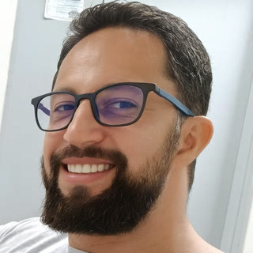
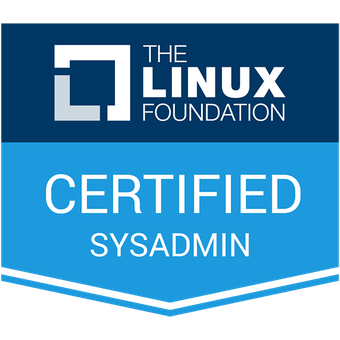

Tácio Souza
Cloud Engineer · Fundador da Kurumin Tecnologia
Aracaju, SE · Brasil
Infraestrutura Linux, Kubernetes e automação. Construo, documento e ensino a operar ambientes estáveis, do servidor ao cluster.
- Linux
- Kubernetes
- Terraform
- Ansible
- GitOps
- Observabilidade
Por onde seguir
Sobre
Sou profissional de infraestrutura com base sólida em servidores Linux (Debian, Ubuntu, Red Hat, SUSE) e automação com Bash, Ansible e Terraform. Tenho a certificação LFCS da Linux Foundation e estou no Cloud Engineer IT Professional Program, rumo à CKA e ao Kubestronaut.
Mantenho um laboratório próprio com cluster Kubernetes multi-nó, GitOps e observabilidade, onde testo as mesmas práticas que aplico com clientes. Documentar é parte do trabalho, não um extra.
Certificações

- LFCS · Linux Foundation Certified System Administrator · 2026 · verificar no Credly
- Terraform Associate (004) · em andamento
- CKA · Certified Kubernetes Administrator · em andamento
- CKAD · CKS · 2027
- Golden Kubestronaut · meta 2028
Trajetória
- Fundador e consultor · Kurumin Tecnologia2026 – presente · Infraestrutura, automação e cloud
- Assistente de Pesquisa · Embrapa2009 – presente · Aracaju/SE · Documentação técnica e tratamento de dados
- Técnico de TI · Wine Tecnologia2022 · Remoto · Suporte de infraestrutura N2, RCA e SLAs
- Pós-graduação em Cloud ComputingFaculdade do Leste Mineiro · 2024
- Pós-graduação em Redes de ComputadoresESAB · 2015
- Graduação em Gestão da Tecnologia da InformaçãoUNIP · 2012